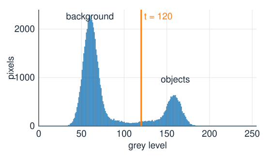
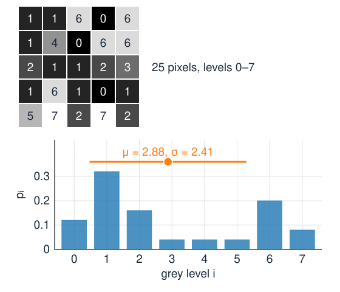
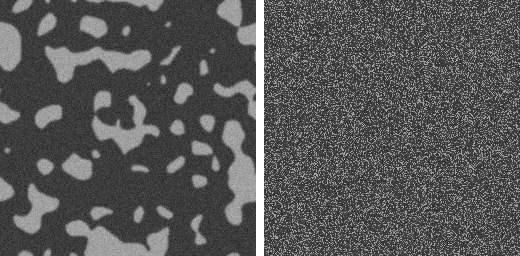
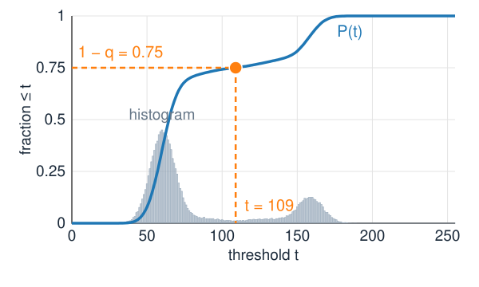
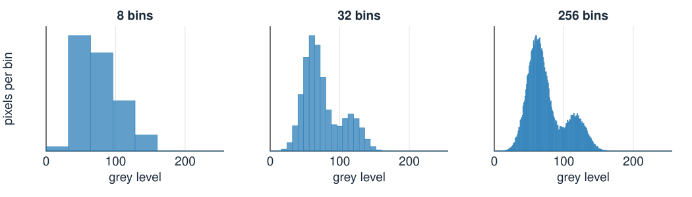
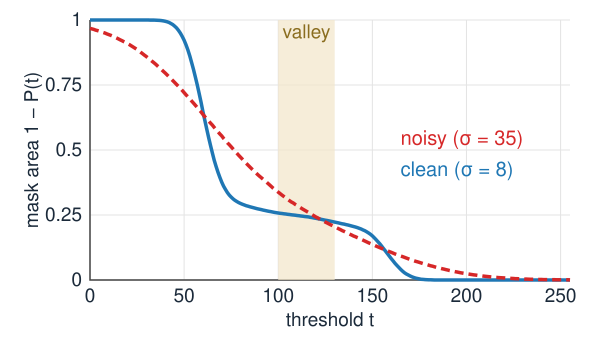
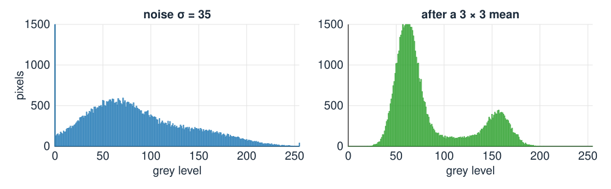
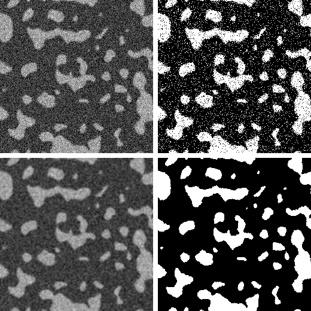

Left: a synthetic image of bright blobs on a dark background. Right: the pixels brighter than t = 120, in white.
A segmentation splits the pixels into object (foreground) and background.
The simplest rule: object where I(x) > t. The result is a binary maskB(x) \in \{0, 1\}.
The ground truth is the true mask: known by construction for a synthetic image, drawn by hand for a real one.
The rule looks at each pixel alone: its grey level, nothing else.
The histogram

Sort the pixels into piles by grey level and count: h_i = number of pixels with grey level i.
Two peaks: background around 60, objects around 160. A threshold in the valley between them separates the two.
Divide by the number of pixels N: the normalised histogramp_i = h_i / N, the fraction of pixels with grey level i. The fractions add up to 1: it is a probability distribution of the grey level of a random pixel.
By hand: a 5 \times 5 image with grey levels 0–7 has counts h = (3, 8, 4, 1, 1, 1, 5, 2), so p_0 = 3/25 = 0.12.
The math: the histogram as a distribution
With L grey levels i = 0, \dots, L-1 and N pixels:
The 5 \times 5 example: \mu = 2.88, \sigma^2 = 5.79. One pass over the image (O(N)) builds the histogram; every quantity on the next slides then costs O(L).

The histogram forgets where pixels are

Right: the same pixels, shuffled to random positions. Same grey levels, so the same histogram, and the same threshold.
A histogram method cannot tell an object from scattered bright noise: shape, size and neighbours are invisible to it.
Everything in this unit and the next uses the histogram only. Neighbours come back with local thresholds and hysteresis (two units on), and with graph cuts (day 27).
The cumulative histogram and the percentile threshold
Recall the cumulative histogram, the equalisation curve of contrast (day 3): P(t) = fraction of pixels with grey level \le t. Here it is the fraction that a threshold at t calls background.
The mask area is 1 - P(t): read it off for any t, without thresholding the image.
Percentile threshold: if you know that objects cover a fraction q of the image (say 2 % of the pixels are fluorescent spots), choose t with P(t) = 1 - q: “keep the brightest 2 %”.
A robust baseline when the object fraction is known and stable; useless when it varies from image to image.
A percentile threshold is a fixed threshold on the equalised image: equalisation maps t to P(t).
Example: in a 512 \times 512 image, “the brightest 2 %” means about 5243 pixels, wherever the valley is.

The blob image: objects are 25 % of the pixels, so P(t) = 0.75 gives t = 109, in the valley.
Bins

8-bit images: 256 natural bins, one per grey level.
16-bit containers (bit depth, day 3: a 12-bit camera uses only 0–4095 of 0–65535): 65 536 bins are mostly empty. Bin over the range of the data instead.
Too few bins merge the peaks and hide the valley; too many bins give a spiky histogram with few pixels per bin.
Try it: histogram and threshold
What makes a threshold good?
A bimodal histogram with a deep valley: every t in the valley gives nearly the same mask.
The mask area changes by the number of pixels at the threshold: 1 - P(t) drops by p_t when t moves up by one. In a deep valley p_t \approx 0: the area curve is flat, and the choice of t hardly matters.
A shallow valley: the area curve is steep, every grey level of t moves many pixels, and the result depends on a choice nobody can justify.
In the demo: the clean blobs lose 1.2 pixels per thousand per grey level in the valley, the noisy ones 4.4: almost four times as sensitive.

“Good” gets two precise meanings today: a criterion on the histogram (next unit), and agreement with the ground truth (the evaluation unit).
The math: the slope of the area curve
The mask area as a function of t is A(t) = 1 - P(t) = \sum_{i > t} p_i, so
A(t) - A(t+1) = p_{t+1}.
For continuous grey levels with density p(x): A'(t) = -p(t). The sensitivity of the mask to the threshold is the histogram at the threshold.
A threshold in a valley where p(t) = 0 is locally insensitive: small errors in t change nothing.
Uncertainty \delta t in the threshold changes the area by about p(t)\,\delta t.
Noise fills the valley

Recall camera noise (day 3): each pixel = true value + noise of standard deviation \sigma_n.
Each peak gets wider by the noise; the two peaks overlap, and the valley fills up (left, \sigma_n = 35).
Pixels in the overlap are on the wrong side of anyt: isolated wrong pixels, salt-and-pepper in the mask.
Numbers: background 50, objects 110, \sigma_n = 20, t = 80 in the middle: 6.7\,\% of the pixels of each class land on the wrong side.
Smoothing first
Average each pixel with its neighbours (mean or Gaussian filter, from filtering, day 1) before thresholding.
Noise is independent from pixel to pixel: an average of n pixels has noise \sigma_n / \sqrt n. A 3 \times 3 mean divides it by 3.
Each peak narrows, and the valley comes back (right, same image after a 3 \times 3 mean).
The example above: \sigma_n = 20 \to 6.7, the wrong fraction drops from 6.7\,\% to 0.0003\,\%.
The median of the window is the non-linear alternative: it ignores a single outlier completely (median of 50, 52, 48, 51, 250, 49, 50, 53, 47 is 50; the mean is 72.2). Denoisers are compared on the deconvolution day; rank filters come back on the morphology day.
The price: edges blur. Pixels at the boundary become a mix of object and background (partial volume): they fill the valley again, and small or thin objects lose contrast.

Top: noise \sigma_n = 35, t = 110: 10 % of the pixels wrong. Bottom: after a 3 \times 3 mean: 1.5 %.
The math: averaging noise
Let the noise values n_1, \dots, n_n be independent with variance \sigma^2. A weighted average \bar n = \sum_k w_k n_k with \sum_k w_k = 1 has
Mean filter, w_k = 1/n: \operatorname{Var} = \sigma^2/n, the standard deviation drops by \sqrt n (by 3 for 3 \times 3).
\sum w_k^2 is smallest for equal weights: for a given number of pixels the mean removes the most noise. A Gaussian of width s pixels behaves like a mean over about 4\pi s^2 pixels.
The tail fraction: with class means \mu_0 < \mu_1, equal noise \sigma and t in the middle, the wrong fraction per class is 1 - \Phi\!\left(\tfrac{\mu_1 - \mu_0}{2\sigma}\right); smoothing by \sqrt n multiplies the argument by \sqrt n.
Try it: noise and smoothing
Summary
A threshold turns an image into a binary mask: object where I(x) > t. Each pixel is judged alone.
The histogramh_i counts pixels per grey level; p_i = h_i/N is a probability distribution. It forgets where the pixels are.
The cumulative histogramP(t) is the background fraction; 1 - P(t) is the mask area. Percentile threshold: P(t) = 1 - q.
Bins: 256 for 8-bit; for 16-bit data bin over the data range.
A good threshold sits in a deep valley: the mask area hardly changes with t.
Noise widens the peaks and fills the valley; smoothing narrows them (noise /\sqrt n) but blurs the edges.